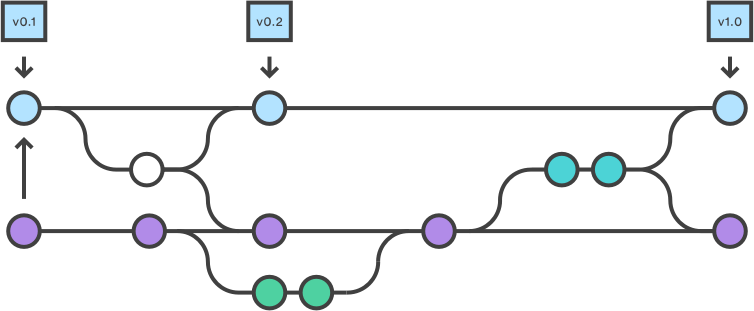
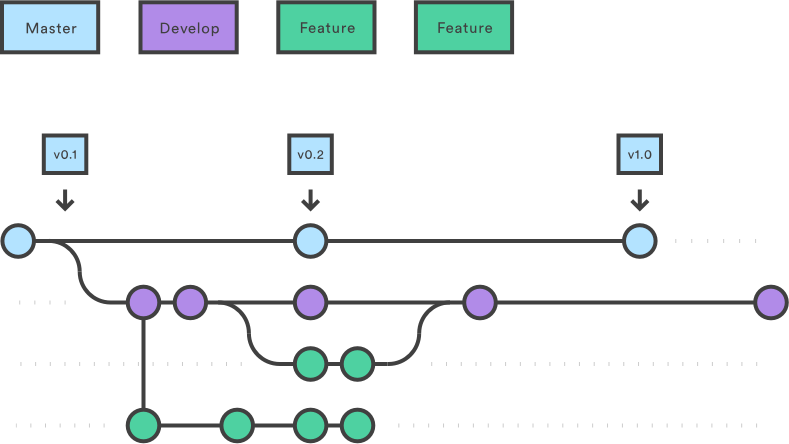

Release Deployment
Use this strategy for projects where features get bundled into a release and then deployed all at once.
You could follow the Gitflow. This page showcases common development scenarios and how to deal with them from a branching point of view.
Branches Overview

| Branch | Protected? | Base Branch | Description |
|---|---|---|---|
master | YES | N/A | What is live in production (stable). A pull request is required to merge code into master. |
develop | YES | master | The latest state of development (unstable). |
| feature | NO | develop | Cutting-edge features (unstable). These branches are used for any maintenance features / active development. |
release-vX.Y.Z | NO | develop | A temporary release branch that follows the semver versioning. This is what is sent to UAT. A pull request is required to merge code into any release-vX.Y.Z branch. |
| bugfix | NO | release-vX.Y.Z | Any fixes against a release branch should be made in a bug-fix branch. The bug-fix branch should be merged into the release branch and also into develop. This is one area where we’re deviating from GitFlow. |
hotfix-* | NO | master | These are bug fixes against production. This is used because develop might have moved on from the last published state. Remember to merge this back into develop and any release branches. |
Use Cases
Develop a new feature

-
Make sure your
developbranch is up-to-date -
Create a feature branch based off of
develop$ git checkout develop $ git checkout -b MYTEAM-123-new-documentation $ git push --set-upstream MYTEAM-123-new-documentation -
Develop the code for the new feature and commit. Push your changes often. This allows others to see your changes and suggest improvements/changes as well as provides a safety net should your hard drive crash.
$ ... make changes $ git add -A . $ git commit -m "Add new documentation files" $ ... make more changes $ git add -A . $ git commit -m "Fix some spelling errors" $ git push -
Navigate to the project on Github and open a pull request with the following branch settings:
- Base:
develop - Compare:
MYTEAM-123-new-documentation
- Base:
-
When the pull request was reviewed, merge and close it and delete the
MYTEAM-123-new-documentationbranch.
Develop multiple features in parallel
There's nothing special about that. Each developer follows the above Develop a new feature process.
Create and deploy a release

-
Merge
masterintodevelopto ensure the new release will contain the latest production code. This reduces the chance of a merge conflict during the release.$ git checkout develop $ git merge master -
Create a new
release-vX.Y.Zrelease branch off ofdevelop.$ git checkout -b release-vX.Y.Z $ git push --set-upstream release-vX.Y.Z -
Stabilize the release by using bugfix branches off of the
release-vX.Y.Zbranch (the same way you would do a feature branch off ofdevelop).$ git checkout release-vX.Y.Z $ git checkout -b fix-label-alignment $ git push --set-upstream fix-label-alignment ... do work $ git commit -m "Adjust label to align with button" $ git push -
When the code is ready to release, navigate to the project on Github and open a pull request with the following branch settings:
- Base:
master - Compare:
release-vX.Y.ZPaste the Release Checklist into the PR body. Each project should define a release checklist. It will vary across projects, but you can refer to the Astro Release document for an example.
- Base:
-
At some point in the checklist you will merge the release branch into
master. You can do this by using the "Merge pull request" button on the release PR. -
Now you are ready to create the actual release. Navigate to the project page on Github and draft a new release with the following settings:
- Tag version:
vX.Y.Z - Target:
master - Release title:
Release vX.Y.Z - Description: Include a high-level list of things changed in this release.
Click
Publish release.
- Tag version:
-
Merge the
release-vX.Y.Zintodevelop.$ git checkout develop $ git merge release-vX.Y.Z $ git push -
Finish off the tasks in the release checklist. Once everything is done, close the release PR.
-
Delete the release branch on Github.
Change in plan, pull a feature from a release
TBD: Discuss Mike N: That probably means recreating the release branch, unless we have short-lived release branches
Supporting old releases
In a release based project old releases can often need some maintenance. Critical bug fixes and strategic feature requests need to be supported on old releases. Old releases often become incompatible with the most recent versions of projects.
In order to support old release versions gitflow has introduced the concept of support branches. Support branches are long living branches created to support major or minor versions of the project. Support branches do not get merged back into master or develop (this would cause major merge issues which are time consuming and error prone if attempted). Instead commits can be cherry picked from the support branch back into develop.
Support branches can be thought of as the master branch for old releases. Support branches for major releases should be named as support-v<major>.x. Support branches for minor releases should be named as support-v<major>.<minor>.x.
Here is an example of creating a support branch for v1.0 assuming v2.0 of the project has already been released.
-
Create the support branch and release branch for the patch release.
// Checkout the tag for the 1.0.0 release git checkout v1.0.0 // Create the long living support branch git checkout -b support-v1.x // Create the release branch git checkout -b release-v1.0.1Note: For subsequent releases (ex v1.0.2) the release branch will be branched off the
HEADofsupport-v1.x -
Make changes in the
release-v1.0.1. Multiple PRs can be merged into this branch if several changes are necessary. -
As PRs are merged into the
release-v1.0.1branch create associated PRs that cherry pick the changes back intodevelop. Ensure that these changes are desired by the team going forward and that they are compatible with the current state of thedevelopbranch. -
Create release PR to merge
release-v1.0.1intosupport-v1.x. -
Follow the standard release process treating
support-v1.xas themasterbranch. As per the standard release processrelease-v1.0.1will get deleted andsupport-v1.xwill remain in repo indefinitely. -
Mark
support-v1.xas a protected branch in github so that it does not get accidentally deleted.
Pro-tip: Try to maintain as few support branches as possible. These branches are expensive to maintain since you will need to cherry pick applicable bug fixes into each support branch seperately.
Production hot fix
A production hotfix is very similar to a full-scale release except that you do
your work in a branch taken directly off of master. Hotfixes are useful in cases
where you want to patch a bug in a released version, but develop has unreleased
code in it already.
TBD: Insert diagram
-
Create a hot fix branch based off of
master.$ git checkout master $ git checkout -b hotfix-documentation-broken-links $ git push --set-upstream origin hotfix-documentation-broken-links -
Add a test case to validate the bug, fix the bug, and commit.
... add test, fix bug, verify $ git add -A . $ git commit -m "Fix broken links" $ git push -
Navigate to the project on Github and open a pull request with the following branch settings:
- Base:
master - Compare:
hotfix-documentation-broken-linksPaste your release checklist into the PR and work through the PR to get the hotfix into production.
- Base:
-
At some point in the checklist you will merge the hotfix branch into
master. You can do this by using the "Merge pull request" button on the release PR. -
Now that the hotfix code is in
masteryou are ready to create the actual release. Navigate to the project page on Github and draft a new release with the following settings:- Tag version:
vX.Y.Z - Target:
master - Release title:
Release vX.Y.Z (hotfix) - Description: Include a high-level list of things changed in this release.
- Tag version:
Click Publish release.
Note: Hotfix releases are actual releases. You should bump at least the patch part of the version when releasing a hotfix and so even hotfixes go through the process of creating a release like this.
-
Merge the
hotfix-documentation-broken-linksintodevelop.$ git checkout develop $ git merge hotfix-documentation-broken-links $ git push -
Finish off the tasks in the release checklist. Once everything is done, close the hotfix PR.
Migrate a legacy project
To migrate any git project to our branching strategy, please follow the instructions in the Migration document.
Scenarios
This section outlines specific scenarios and the steps to take to ensure success.
Deploying an Adaptive.js/Mobify.js Bundle to Production
The process for tagging and merging is a bit different when deploying a bundle, the steps to take are outlined here:
-
Ensure all features are merged into
release-v.X.Y.Z -
Create a bundle to be sent to the customer for verification and approval off of the
release-vX.Y.Zbranch.Ensure you have installed the automated bundle message script found [here] (https:// mobify.atlassian.net/wiki/questions/81789082/how-do-i-automate-a-bundle-message-using-bash). Follow these steps:
$ grunt push -m "$(message Mobile X.Y.Z)" -
When creating a pull request to merge the release branch into
masterensure that the standard workflow for creating a release is followed with these specific changes:- Name/Summary:
DEPLOYMENT MERGE: release-v.X.Y.Z, bundle <bundle number that was sent to customer> - Description:
Status: **Out to Customer** Owner: <Your Github username> Reviewers: Customer ## Bundle: - <bundle link sent to customer> ## Jira Tickets: - [x] <List of JIRA Tickets associated with release> ## Todos: - [ ] Customer Approves Bundle <number> - [ ] Deploy Bundle <number> - [ ] Clean Up Repo - Name/Summary:
-
Once the customer has approved the bundle. The bundle is published to production and post launch tests occur. Once all tests have passed, the pull request is merged into
master. -
Finish the Github release workflow as described above and ensure that these specific changes are added to the release notes draft of the Github release:
- Release title:
Release vX.Y.Z - Bundle <number> - Description: This should also include a link to a confluence JIRA report page that lists all issues in the release.
Click
Publish release.NOTE: the release tag will be 1 commit ahead of the bundle commit
- Release title: